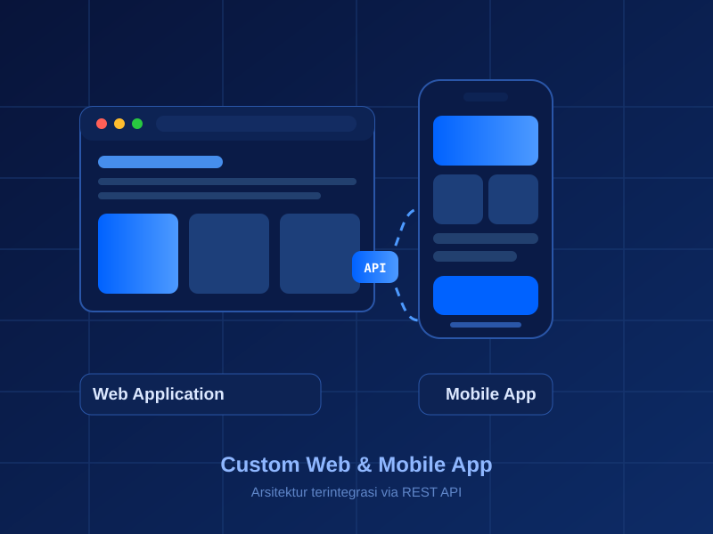
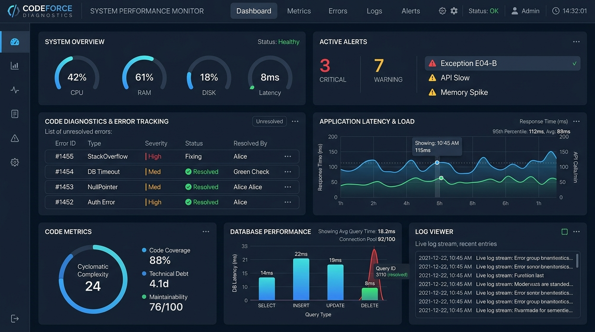
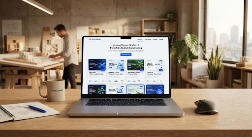
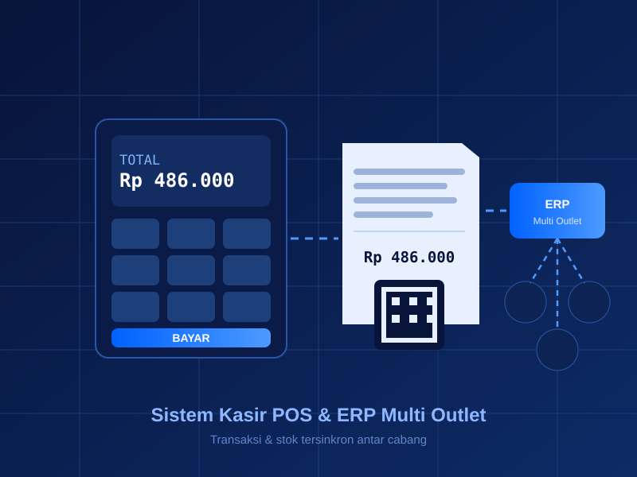
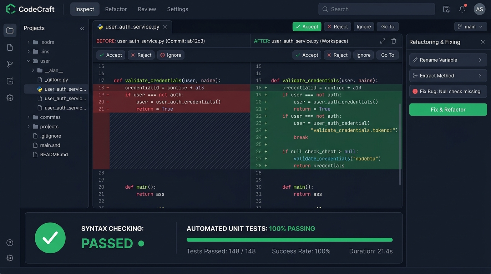
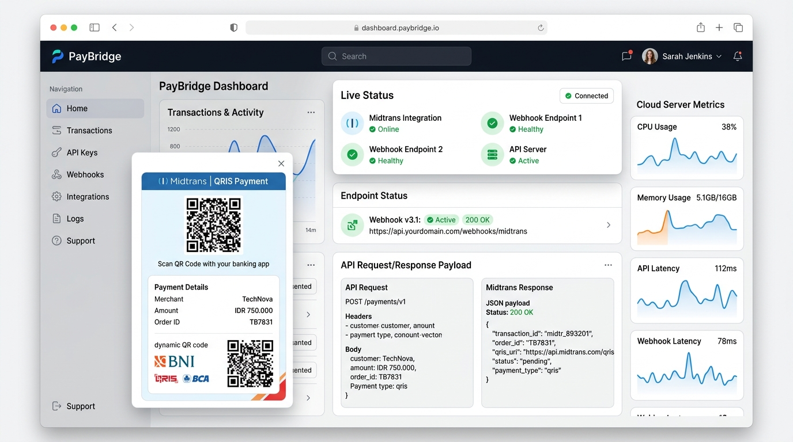

Layanan Pengembangan Website & Sistem Digital.
Solusi pengembangan website, aplikasi bisnis, dan sistem custom. Dari landing page, aplikasi kasir/POS, hingga automasi API dan perbaikan bug secara terstruktur.
Struktur Kode Rapi & Dukungan Penuh.
Setiap sistem dibangun dengan kode yang rapi dan terstruktur, dokumentasi jelas, panduan deployment, serta garansi perbaikan bug.
Pilih Bidang Kebutuhan Anda
Custom Software & Sistem Digital
Pengembangan software custom dan arsitektur sistem dari nol: Web App, Mobile App Flutter/React Native, sistem pendukung keputusan (SPK), hingga integrasi Python Machine Learning.

verified Fasilitas Termasuk:
- Source code bersih & dokumentasi arsitektur terstruktur
- Database 3NF, API endpoint & panduan deployment
- Sesi konsultasi teknis & walkthrough sistem via Google Meet
- Garansi revisi & perbaikan bug
Debugging, Refactoring & Technical Support
Troubleshooting error syntax, optimasi query SQL, perbaikan logika program, refactoring kode agar lebih rapi, dan integrasi API pihak ketiga.

verified Fasilitas Termasuk:
- Penulisan kode clean, modular & efisien
- Dokumentasi penjelasan logika tiap fungsi & modul
- Testing menyeluruh & verifikasi hasil running program
- Bantuan remote setup & troubleshooting via AnyDesk/Meet
Website Profil & Katalog UMKM
Pembuatan landing page profesional, website company profile, katalog produk ekspor dengan performa kencang, responsive mobile, SEO-ready, dan integrasi WhatsApp.

verified Fasilitas Termasuk:
- Desain modern, clean & mobile responsive
- Score Google Lighthouse 95+
- Direct WhatsApp order & Google Maps
- Setup domain & hosting SSL siap pakai
Aplikasi Kasir POS & ERP
Sistem inventaris stok barang, kasir multi-outlet, cetak struk thermal bluetooth/USB, role management bertingkat, dan laporan laba-rugi otomatis secara real-time.

verified Fasilitas Termasuk:
- Multi-cabang & barcode scanner ready
- Cetak struk thermal & export PDF/Excel
- Laporan omset harian/bulanan real-time
- Hak akses kasir, gudang, dan owner
Fix Bug, Error & Refactoring
Solusi praktis untuk error program, query database lambat, konflik package composer/npm, atau penataan ulang struktur kode agar mudah dipelihara.

verified Fasilitas Termasuk:
- Analisis akar error & root cause fix
- Sesi remote meet langsung via Anydesk/Meet
- Optimasi query & indeks performa database
- Garansi tidak muncul error berulang
Custom API, Payment & Cloud
Integrasi payment gateway otomatis (Midtrans, Xendit, Tripay), gateway notifikasi WhatsApp otomatis, bot Telegram, webhook, serta deployment cloud VPS aman.

verified Fasilitas Termasuk:
- Callback webhook aman terenkripsi
- Notifikasi invoice WA otomatis
- Setup Cloud Server VPS (Ubuntu/Nginx)
- Dokumentasi endpoint Swagger / Postman
4 Tahap Pengerjaan Sistem Anda
Transparan, terjadwal, dan dapat dipantau setiap saat.
Konsultasi Kebutuhan
Kirimkan brief kebutuhan, rancangan fitur, atau gambaran aplikasi via WhatsApp secara gratis.
Analisis & Jadwal
Kami menganalisis kebutuhan fitur, menentukan teknologi yang tepat, dan menyepakati estimasi waktu pengerjaan.
Pengerjaan & Update Berkala
Sistem dikembangkan secara bertahap dengan update berkala agar Anda selalu mengetahui progres terkini.
Serah Terima & Garansi
Penyerahan source code lengkap, panduan teknis, dan pendampingan hingga sistem siap digunakan.
Punya Kebutuhan Coding di Luar Daftar di Atas?
Konsultasikan langsung dengan tim kami. Ceritakan kebutuhan website, aplikasi, atau kendala sistem Anda, dan kami bantu siapkan solusi teknis yang tepat.